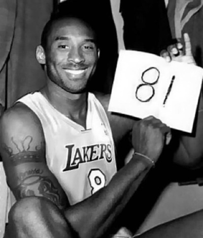

L.A. Lakers
Main Page
Legendary Players
Great Stories
Contact Page
Bibliografie
Sad Champion Kobe
81 puncte
Tendonul lui Ahile
Lights out
81 puncte

In Ianuarie 2006, intr-un meci impotriva celor de la Toronto Raptors, Kobe bryant a marcat 81 puncte, detinand locul doi in istoria NBA la cele mai multe puncte marcate intr-un meci, pe locul unu fiind Wilt Chamberlain cu 100 puncte.